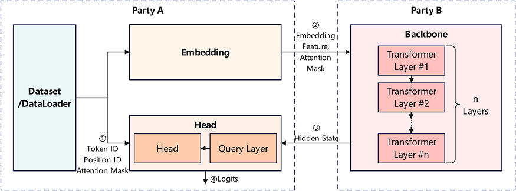

Vertical Federated Learning Model Training - Pangu Alpha Large Model Cross-Domain Training

Overview
With the advancement of hardware computing power and the continuous expansion of network data size, pre-training large models has increasingly become an important research direction in fields such as natural language processing and graphical multimodality. Take Pangu Alpha, which released a large pre-trained model of Chinese NLP in 2021, as an example, the number of model parameters reaches 200 billion, and the training process relies on massive data and advanced computing centers, which limits its application landing and technology evolution. A feasible solution is to integrate the computing power and data resources of multiple participants based on vertical federated learning or split learning techniques to achieve cross-domain collaborative training of pre-trained large models while ensuring security and privacy.
MindSpore Federated provides a vertical federated learning base functional component based on split learning. This sample provides a federated learning training sample for large NLP models by taking the Pangaea alpha model as an example.

As shown in the figure above, in this case, the Pangaea α model is sliced into three sub-networks, such as Embedding, Backbone and Head. The front-level subnetwork Embedding and the end-level subnetwork Head are deployed in the network domain of participant A, and the Backbone subnetwork containing multi-level Transformer modules is deployed in the network domain of participant B. The Embedding subnetwork and Head subnetwork read the data held by participant A and dominate the training and inference tasks for performing the Pangaea α model.
In the forward inference stage, Participant A uses the Embedding subnetwork to process the original data and transmits the output Embedding Feature tensor and Attention Mask Feature tensor to Participant B as the input of Participant B Backbone subnetwork. Then, Participant A reads the Hide State Feature tensor output from the Backbone subnetwork as the input of Participant A Head subnetwork, and finally the predicted result or loss value is output by the Head sub-network.
In the backward propagation phase, after completing the gradient calculation and parameter update of the Head subnetwork, Participant A transmits the gradient tensor associated with the Hide State Feature tensor to Participant B for the gradient calculation and parameter update of the Backbone subnetwork. Then, Participant B transmits the gradient tensor associated with the Embedding Feature tensor to Participant A for the gradient calculation and parameter update of the Embedding subnetwork after completing the gradient calculation and parameter update of the Backbone subnetwork.
The feature tensor and gradient tensor exchanged between participant A and participant B during the above forward inference and backward propagation are processed by using privacy security mechanisms and encryption algorithms, so that it is not necessary to transmit the data held by participant A to participant B for implementing the collaboration training of the network model by the two participants. Due to the small number of Embedding and Head subnetwork parameters and the huge number of Backbone subnetwork parameters, this sample application is suitable for the large model collaboration training or deployment between the service side (corresponding to participant A) and the computing center (corresponding to participant B).
For a detailed introduction to the pangu α model principles, please refer to MindSpore ModelZoo - pangu_alpha, Introduction to Pengcheng -pangu α, and its research paper.
Preparation
Environment Preparation
Refer to Obtaining MindSpore Federated to install MindSpore version 1.8.1 and above and MindSpore Federated.
Download the MindSpore Federated code and install the Python packages that this sample application depends on.
git https://gitee.com/mindspore/federated.git cd federated/example/splitnn_pangu_alpha/ python -m pip install -r requirements.txt
Dataset Preparation
Before running the sample, refer to MindSpore ModelZoo - pangu_alpha - Dataset Generation and use the preprocess.py script to convert the raw text corpus for training into a dataset that can be used for model training.
Defining the Vertical Federated Learning Training Process
MindSpore Federated Vertical Federated Learning Framework uses FLModel (see Vertical Federated Learning Model Training Interface) and yaml files (see Yaml Configuration file for model training of vertical federated learning), to model vertical federated learning training process.
Defining the Network Model
Call the function components provided by MindSpore and take nn.Cell (see mindspore.nn.Cell) as a base class to program the training network of this participant to be involved in vertical federated learning. Taking the Embedding subnetwork of participant A in this application practice as an example, sample code is as follows:
class EmbeddingLossNet(nn.Cell): """ Train net of the embedding party, or the tail sub-network. Args: net (class): EmbeddingLayer, which is the 1st sub-network. config (class): default config info. """ def __init__(self, net: EmbeddingLayer, config): super(EmbeddingLossNet, self).__init__(auto_prefix=False) self.batch_size = config.batch_size self.seq_length = config.seq_length dp = config.parallel_config.data_parallel self.eod_token = config.eod_token self.net = net self.slice = P.StridedSlice().shard(((dp, 1),)) self.not_equal = P.NotEqual().shard(((dp, 1), ())) self.batch_size = config.batch_size self.len = config.seq_length self.slice2 = P.StridedSlice().shard(((dp, 1, 1),)) def construct(self, input_ids, position_id, attention_mask): """forward process of FollowerLossNet""" tokens = self.slice(input_ids, (0, 0), (self.batch_size, -1), (1, 1)) embedding_table, word_table = self.net(tokens, position_id, batch_valid_length=None) return embedding_table, word_table, position_id, attention_mask
In the yaml configuration file, describe the corresponding name, input, output and other information of the training network. Taking the Embedding subnetwork of Participant A in this application practice, example code is as follows:
train_net: name: follower_loss_net inputs: - name: input_ids source: local - name: position_id source: local - name: attention_mask source: local outputs: - name: embedding_table destination: remote - name: word_table destination: remote - name: position_id destination: remote - name: attention_mask destination: remote
The
namefield is the name of the training network and will be used to name the checkpoints file saved during the training process. Theinputsfield is the list of input tensor in the training network, and theoutputsfield is the list of output tensor in the training network.The
namefields under theinputsandoutputsfields are the input/output tensor names. The names and order of the input/output tensors need to correspond strictly to the inputs/outputs of theconstructmethod in the corresponding Python code of the training network.sourceunder theinputsfield identifies the data source of the input tensor, withlocalrepresenting that the input tensor is loaded from local data andremoterepresenting that the input tensor is from network transmission of other participants.destinationunder theoutputsfield identifies the destination of the output tensor, withlocalrepresenting the output tensor for local use only, andremoterepresenting that the output tensor is transferred to other participants via networks.Optionally, a similar approach is used to model the assessment network of vertical federated learning that this participant is to be involved.
Defining the Optimizer
Call the functional components provided by MindSpore, to program the optimizer for parameter updates of this participant training network. As an example of a custom optimizer used by Participant A for Embedding subnetwork training in this application practice, sample code is as follows:
class PanguAlphaAdam(TrainOneStepWithLossScaleCell): """ Customized Adam optimizer for training of pangu_alpha in the splitnn demo system. """ def __init__(self, net, optim_inst, scale_update_cell, config, yaml_data) -> None: # Custom optimizer-related operators ... def __call__(self, *inputs, sens=None): # Define the gradient calculation and parameter update process ...
Developers can customize the input and output of the
__init__method in the optimizer class, but the input of the__call__method in the optimizer class needs to contain onlyinputsandsens.inputsis of typelist, corresponding to the input tensor list of the training network, and its elements are of typemindspore.Tensor.sensis of typedict, which saves the weighting coefficients used to calculate the gradient values of the training network parameters, and its key is a gradient weighting coefficient identifier of typestr. Value is of typedict, whose key is of typestr, and it is the name of the output tensor of the training network. Value is of typemindspore.Tensor, which is the weighting coefficient of the training network parameter gradient values corresponding to this output tensor.In the yaml configuration file, describe the corresponding gradient calculation, parameter update, and other information of the optimizer. The sample code is as follows:
opts: - type: CustomizedAdam grads: - inputs: - name: input_ids - name: position_id - name: attention_mask output: name: embedding_table sens: hidden_states - inputs: - name: input_ids - name: position_id - name: attention_mask output: name: word_table sens: word_table params: - name: word_embedding - name: position_embedding hyper_parameters: learning_rate: 5.e-6 eps: 1.e-8 loss_scale: 1024.0
The
typefield is of the optimizer type. Here is the developer-defined optimizer.The
gradsfield is a list ofGradOperationassociated with the optimizer, which will use theGradOperationoperator in the list to compute the output gradient values and update the training network parameters. Theinputsandoutputfields are input and output tensor lists of theGradOperationoperator, whose elements are an input/output tensor name, respectively. Thesensfield is the gradient weighting coefficient or the sensitivity identifier of theGradOperationoperator (refer to mindspore.ops.GradOperation).The
paramsfield is a list of training network parameter names to be updated by the optimizer, whose elements are the names of one training network parameter each. In this example, the custom optimizer will update the network parameters with theword_embeddingstring and theposition_embeddingstring in their names.The
hyper_parametersfield is a list of hyperparameters for the optimizer.
Defining Gradient weighting coefficient Calculation
According to the chain rule of gradient calculation, the subnetwork located at the backstream of the global network needs to calculate the gradient value of its output tensor relative to the input tensor, i.e., the gradient weighting coefficient or sensitivity, to be passed to the sub-network located at the upstream of the global network for its training parameter update.
MindSpore Federated uses the GradOperation operator to complete the above gradient weighting coefficient or sensitivity calculation process. The developer needs to describe the GradOperation operator used to calculate the gradient weighting coefficients in the yaml configuration file. Taking Head of participant A in this application practice as an example, sample code is as follows:
grad_scalers:
- inputs:
- name: hidden_states
- name: input_ids
- name: word_table
- name: position_id
- name: attention_mask
output:
name: output
sens: 1024.0
The inputs and output fields are lists of input and output tensors of the GradOperation operator, whose elements are input/output tensor names, respectively. The sens field is the gradient weighting coefficient or sensitivity of this GradOperation operator (refer to mindspore.ops.GradOperation). If it is a float or int type value, a constant tensor will be constructed as the gradient weighting coefficient. If it is a str type string, the tensor corresponding to the name will be parsed as a weighting coefficient from the weighting coefficients transmitted by the other participants via the network.
Executing the Training
After completing the above Python programming development and yaml configuration file, the
FLModelclass andFLYamlDataclass provided by MindSpore Federated are used to build the vertical federated learning process. Taking the Embedding subnetwork of participant A in this application practice as an example, sample code is as follows:embedding_yaml = FLYamlData('./embedding.yaml') embedding_base_net = EmbeddingLayer(config) embedding_eval_net = embedding_train_net = EmbeddingLossNet(embedding_base_net, config) embedding_with_loss = _VirtualDatasetCell(embedding_eval_net) embedding_params = embedding_with_loss.trainable_params() embedding_group_params = set_embedding_weight_decay(embedding_params) embedding_optim_inst = FP32StateAdamWeightDecay(embedding_group_params, lr, eps=1e-8, beta1=0.9, beta2=0.95) embedding_optim = PanguAlphaAdam(embedding_train_net, embedding_optim_inst, update_cell, config, embedding_yaml) embedding_fl_model = FLModel(yaml_data=embedding_yaml, network=embedding_train_net, eval_network=embedding_eval_net, optimizers=embedding_optim)
The
FLYamlDataclass mainly completes the parsing and verification of yaml configuration files, and theFLModelclass mainly provides the control interface for vertical federated learning training, inference and other processes.Call the interface methods of the
FLModelclass to perform vertical federated learning training. Taking the Embedding subnetwork of participant A in this application practice as an example, sample code is as follows:if opt.resume: embedding_fl_model.load_ckpt() ... for epoch in range(50): for step, item in enumerate(train_iter, start=1): # forward process step = epoch * train_size + step embedding_out = embedding_fl_model.forward_one_step(item) ... # backward process embedding_fl_model.backward_one_step(item, sens=backbone_scale) ... if step % 1000 == 0: embedding_fl_model.save_ckpt()
The
forward_one_stepmethod and thebackward_one_stepmethod perform the forward inference and backward propagation operations of a data batch, respectively. Theload_ckptmethod and thesave_ckptmethod perform the checkpoints file loading and saving operations respectively.
Running the Example
This example provides 2 sample programs, both running as shell scripts to pull up Python programs.
run_pangu_train_local.sh: Single-process example program. Participant A and participant B are trained in the same process, which transmits the feature tensor and gradient tensor directly to the other participant in the form of intra-program variables.run_pangu_train_leader.shandrun_pangu_train_follower.sh: Multi-process example program. Participant A and participant B run a separate process, which encapsulates the feature tensor and gradient tensor as protobuf messages, respectively, and transmits them to the other participant via the https communication interface.run_pangu_train_leader.shandrun_pangu_train_follower.shcan be run on two servers separately to achieve cross-domain collaboration training.The current vertical federated distributed training supports https cross-domain encrypted communication. The startup command is as follows:
# Start the leader process in https encrypted communication mode: bash run_pangu_train_leader.sh 127.0.0.1:10087 127.0.0.1:10086 /path/to/train/data_set /path/to/eval/data_set True server_cert_password client_cert_password /path/to/server_cert /path/to/client_cert /path/to/ca_cert # Start the follower process in https encrypted communication mode: bash run_pangu_train_follower.sh 127.0.0.1:10086 127.0.0.1:10087 True server_cert_password client_cert_password /path/to/server_cert /path/to/client_cert /path/to/ca_cert
Running a Single-Process Example
Taking run_pangu_train_local.sh as an example, run the sample program as follows:
Go to the sample program directory:
cd federated/example/splitnn_pangu_alpha/
Taking the wiki dataset as an example, copy the dataset to the sample program directory:
cp -r {dataset_dir}/wiki ./
Install the dependent Python packages:
python -m pip install -r requirements.txt
Modify
src/utils.pyto configure parameters such as checkpoint file load path, training dataset path, and evaluation dataset path. Examples are as follows:parser.add_argument("--load_ckpt_path", type=str, default='./checkpoints', help="predict file path.") parser.add_argument('--data_url', required=False, default='./wiki/train/', help='Location of data.') parser.add_argument('--eval_data_url', required=False, default='./wiki/eval/', help='Location of eval data.')
Execute the training script:
./run_pangu_train_local.sh
View the training loss information recorded in the training log
splitnn_pangu_local.txt.INFO:root:epoch 0 step 10/43391 loss: 10.616087 INFO:root:epoch 0 step 20/43391 loss: 10.424824 INFO:root:epoch 0 step 30/43391 loss: 10.209235 INFO:root:epoch 0 step 40/43391 loss: 9.950026 INFO:root:epoch 0 step 50/43391 loss: 9.712448 INFO:root:epoch 0 step 60/43391 loss: 9.557744 INFO:root:epoch 0 step 70/43391 loss: 9.501564 INFO:root:epoch 0 step 80/43391 loss: 9.326054 INFO:root:epoch 0 step 90/43391 loss: 9.387547 INFO:root:epoch 0 step 100/43391 loss: 8.795234 ...
The corresponding visualization results are shown below, where the horizontal axis is the number of training steps, the vertical axis is the loss value, the red curve is the Pangu α training loss value, and the blue curve is the Pangu α training loss value based on splitting learning in this example. The trend of decreasing loss values is basically the same, and the correctness of the training process can be verified considering that the initialization of the network parameter values has randomness.

Running a Multi-Process Example
Similar to the single-process example, go to the sample program directory, and install the dependent Python packages:
cd federated/example/splitnn_pangu_alpha/ python -m pip install -r requirements.txt
Copy the dataset to the sample program directory on Server 1:
cp -r {dataset_dir}/wiki ./
Start the training script for Participant A on Server 1:
./run_pangu_train_leader.sh {ip_address_server1} {ip_address_server2} ./wiki/train ./wiki/train
The first parameter of the training script is the IP address and port number of the local server (Server 1), and the second parameter is the IP address and port number of the peer server (Server 2). The third parameter is the training dataset file path. The fourth parameter is the evaluation dataset file path, and the fifth parameter identifies whether to load an existing checkpoint file.
Start the training script for Participant B on Server 2.
./run_pangu_train_follower.sh {ip_address_server2} {ip_address_server1}
The first parameter of the training script is the IP address and port number of the local server (Server 2), and the second parameter is the IP address and port number of the peer server (Server 2). The third parameter identifies whether to load an existing checkpoint file.
Check the training loss information recorded in the training log
leader_processs.logof Server 1. If the trend of its loss information is consistent with that of the centralized training loss values of Pangaea α, the correctness of the training process can be verified.